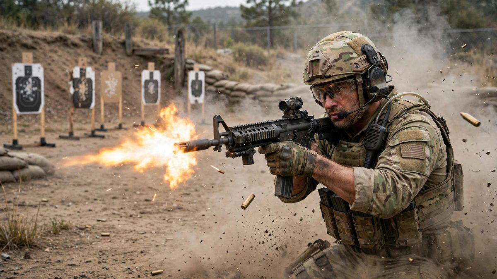

Recoil Control Guide: Master Every Spray

Recoil is the single biggest reason players lose gunfights in PUBG. You can have perfect aim and still lose a spray because your bullets climb over the enemy's head after the third shot. Every weapon in the game has its own recoil pattern: the M416 climbs gently and is easy to control, the Beryl M762 kicks hard to the left and right, and the AKM jumps up sharply. The good news is that recoil is a skill, not luck. With the right attachments, the right settings and a little practice, you can control almost any spray in the game. This guide explains how recoil works and gives you a step-by-step method to master it.
How Recoil Works in PUBG
When you hold the fire button, your weapon's aim point moves. The first few shots are fairly accurate, then the gun starts to climb vertically and drift sideways. This is called the spray pattern, and it is different for every weapon. Assault rifles have a predictable climb that you can counter by pulling your mouse down. DMRs have a sharp kick after every shot, so you need to reset your aim between shots. Sniper rifles have the most kick of all, which is why most players fire them slowly and deliberately. Two things make recoil worse: firing while standing or moving, and using a weapon without attachments. Crouching or going prone reduces recoil significantly, and a compensator and a grip can cut it down even further. Understanding this is the first step, because once you know why your bullets miss, you can fix it.
The golden rule of spraying
- Pull your mouse down smoothly as you fire, at the same speed the gun climbs.
- Start pulling the moment you click, not after you see the bullets rise.
- Fire in bursts of 5 to 8 shots at mid range, and full sprays only up close.
- Crouch before you spray; it tightens your bullet spread and reduces recoil.
Attachments That Reduce Recoil
Attachments are the fastest way to make a gun easier to control. The compensator is the best muzzle attachment for recoil: it reduces both vertical and horizontal kick, and it is the top choice for the M416, Beryl and AKM. The flash hider is a decent alternative that also hides your muzzle flash, while the suppressor hides your sound but does not help recoil. For grips, the vertical grip reduces vertical recoil and is the best choice for most rifles. The half grip reduces both vertical and horizontal recoil slightly and improves recovery time, making it a good option for the Beryl. The angled grip improves aim-down-sights speed but does not help recoil much. The tactical stock reduces recoil on the M416 and Vector, and the cheek pad helps DMRs and snipers. A good rule is to prioritise the compensator and the vertical grip first, then the stock, then the magazine.
Recoil Control by Weapon
| Weapon | Recoil Level | Best Grip | Spray Advice |
|---|---|---|---|
| M416 | Low | Vertical grip | Pull down gently, full spray to 50m |
| Beryl M762 | High | Half grip | Short bursts, pull down and slightly right |
| AKM | Medium-high | Vertical grip | Burst fire beyond 30m |
| SCAR-L | Low-medium | Vertical grip | Easy to control, spray freely |
| Groza | Medium | Built-in grip | Spray up close, burst at range |
How to Practise Recoil Control
The training mode is the best place to learn recoil. Pick up your favourite rifle, attach a compensator and a vertical grip, and spray at a wall from 20 metres without moving your mouse. Watch the bullet pattern: it shows you exactly how the gun climbs. Now spray again, this time pulling your mouse down at the same speed. Repeat this until your bullets form a tight group instead of a tall line. Then practise on the moving targets in the training range, and finally take the skill into real matches. A good daily routine is ten minutes of wall spraying followed by ten minutes of target practice. Within a week, you will notice your sprays landing far more consistently. On mobile, the same idea applies with your thumb: drag down on the screen as you fire, and lower your sensitivity slightly if the gun feels uncontrollable.
Common Recoil Mistakes
The most common mistake is pulling the mouse down too late. By the time you react to the climb, the first five bullets have already missed. Start your pull the instant you fire. The second mistake is pulling too hard, which drags your aim below the target. The pull should be smooth and steady, not a sudden yank. The third mistake is spraying while moving: your bullets spread widely when you run, so stop, crouch and then fire. The fourth is ignoring attachments. A bare M416 has noticeably more recoil than a fully kitted one, so always grab a compensator and a grip before your next fight. Finally, do not try to spray at long range. Beyond 100 metres, even the best players switch to tap firing or a DMR, because no amount of recoil control makes a full spray accurate at that distance.
Frequently Asked Questions
What is the best attachment for recoil control?
The compensator is the best muzzle attachment for reducing recoil, and the vertical grip is the best grip for most rifles. Together they make a big difference on guns like the M416, Beryl M762 and AKM.
Does crouching reduce recoil in PUBG?
Yes. Crouching reduces recoil and tightens your bullet spread, and going prone reduces it even more. Always crouch before spraying when you have the time and cover to do so.
How long does it take to learn recoil control?
Most players see real improvement after a week of ten to fifteen minutes of daily practice in training mode. Mastering hard guns like the Beryl takes longer, but the basics transfer to every weapon.
Download PUBG: Battlegrounds
Play free on PC or mobile — download the official game from the links below.